Electrical Engineering graduate from Universitas Mataram working across three signal domains: electrical distribution data, embedded sensor networks, and human gesture — most recently a real-time Indonesian Sign Language (BISINDO) recognizer built on landmark tracking and LSTM classification.
| Location | West Nusa Tenggara, Indonesia |
| Education | B.Eng Electrical Engineering, Univ. Mataram — GPA 3.45/4.00 |
| Core stack | Python · TensorFlow · OpenCV · Arduino/ESP32 |
| Flagship result | 96.17% test accuracy, 7-class sign recognition |
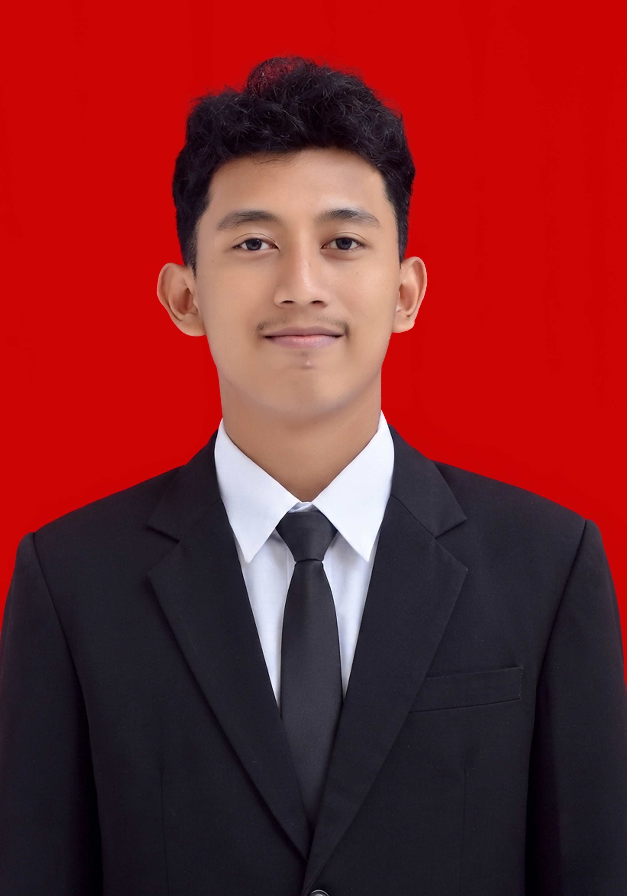
FIG 1.1 — Foto profesional / headshot
Electrical Engineering graduate from the University of Mataram with hands-on experience in machine learning, computer vision, data analysis, Python programming, and embedded systems. Built and evaluated AI-based systems including a real-time sign language recognition model, alongside spatial analysis of electrical distribution faults, technical system development, and laboratory instruction.
Equally grounded in the field: electrical installation, medium-voltage distribution maintenance, wiring, and drafting through industrial internships. Comfortable moving between a Jupyter notebook and a live distribution panel — and communicating either one clearly, in English or Indonesian.
A real-time system that converts sequential hand and body movement into structured landmark features, then classifies them into words using a trained LSTM network — extended with a CNN-LSTM + attention variant and a MobileNetV2 feature path to push accuracy further and evaluate model behavior against test-set limitations.
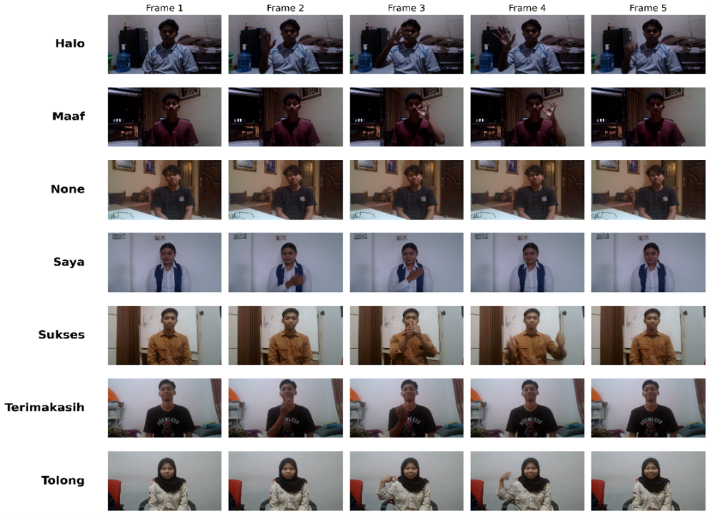
FIG 2.1 — Deteksi landmark MediaPipe saat inferensi
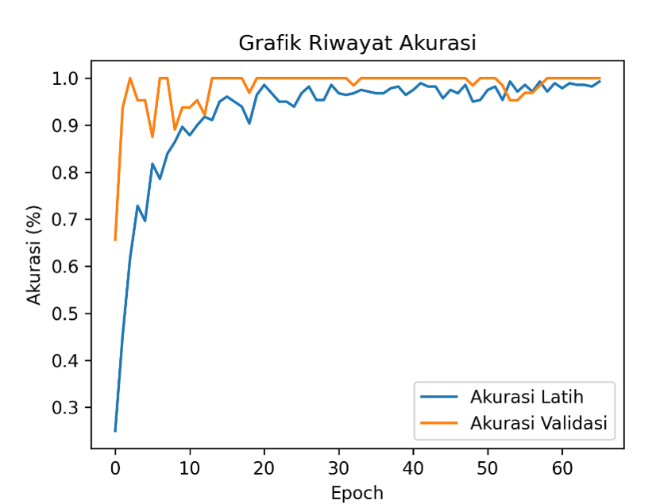
FIG 2.2 — Kurva akurasi & evaluasi test-set
Pipeline: webcam frames → MediaPipe Holistic landmark extraction → sequential feature encoding → LSTM / CNN-LSTM classification → real-time webcam inference, with test-set analysis used to compare model variants and surface performance limitations.
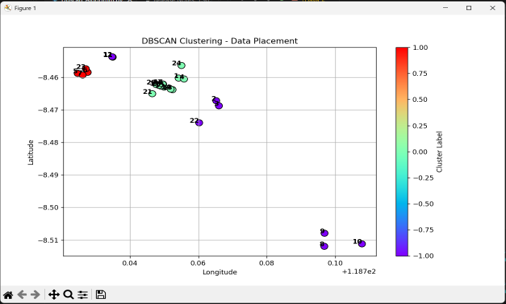
FIG 3.1 — Peta Folium titik gangguan distribusi
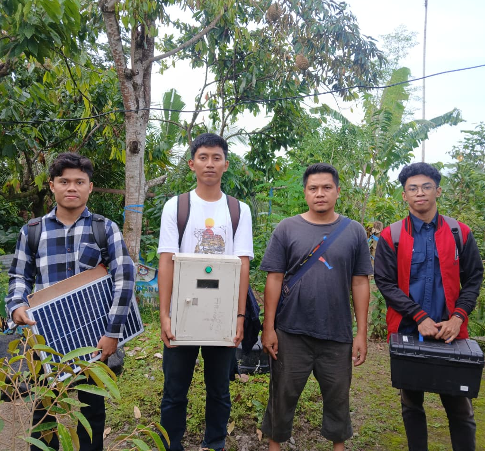
FIG 3.2 — Prototipe sistem IoT di lokasi kebun
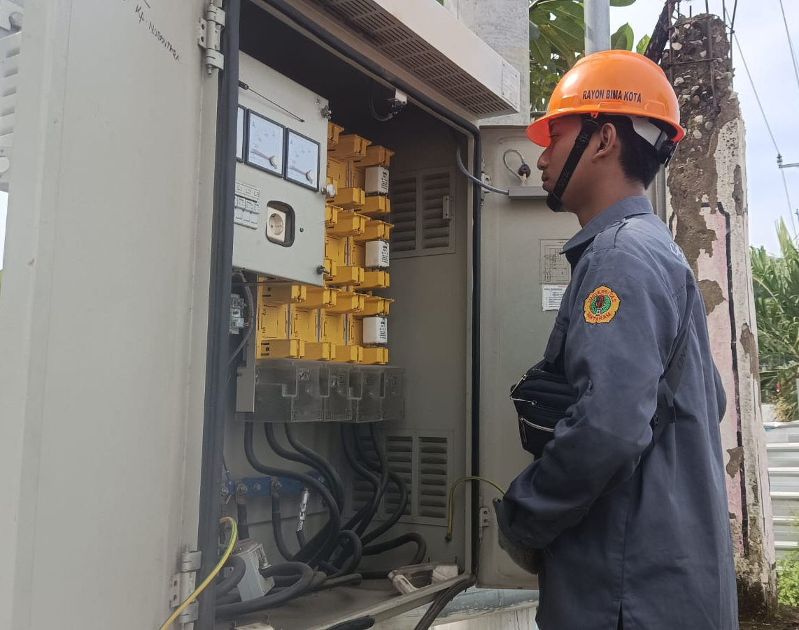
FIG 4.1 — Survei jaringan distribusi bersama tim PLN
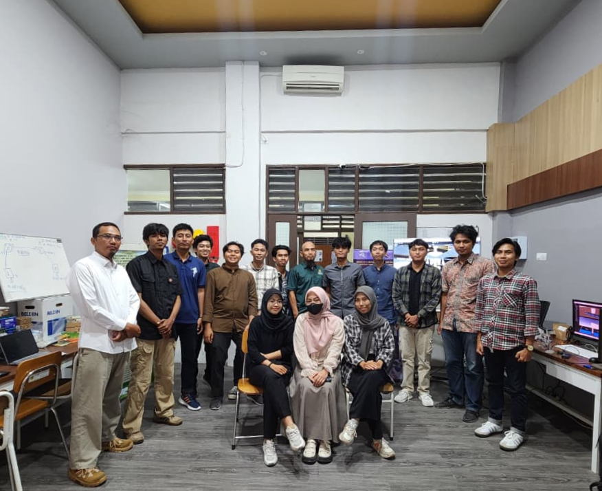
FIG 4.2 — Mendampingi praktikum mahasiswa
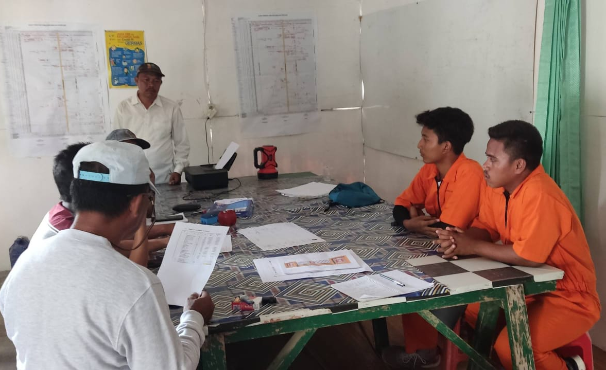
FIG 4.3 — Instalasi kelistrikan taman kota
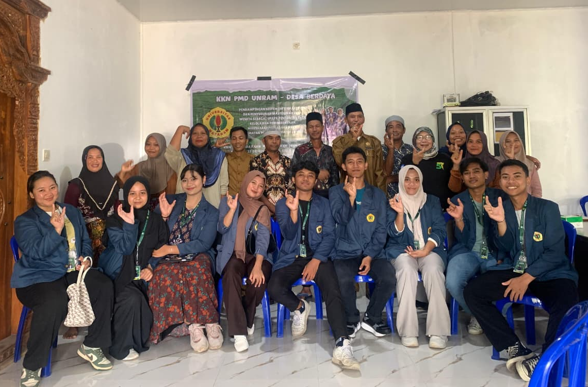
FIG 5.1 — Pendataan digital rumah tangga
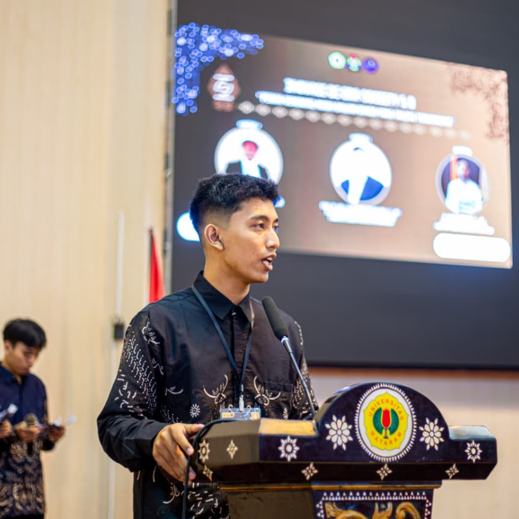
FIG 5.2 — Panitia bersama peserta acara
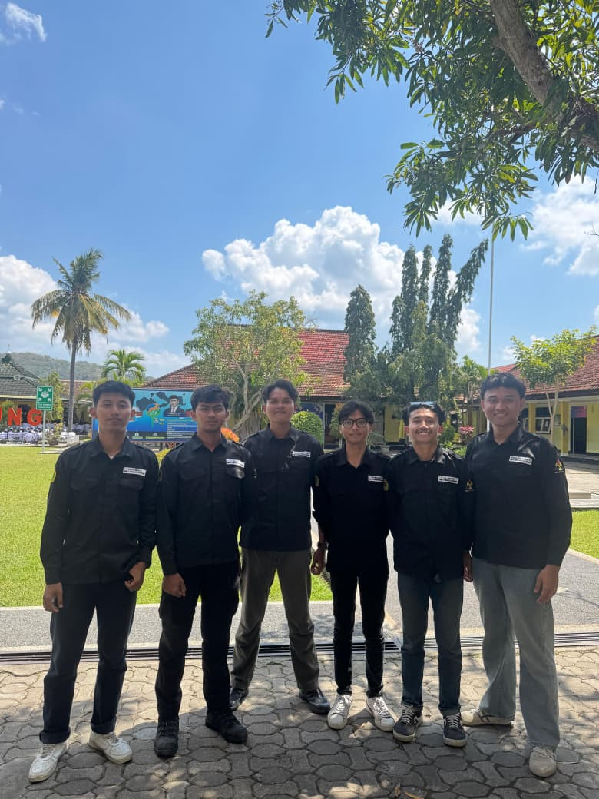
FIG 5.3 — Penandatanganan kerja sama dengan mitra
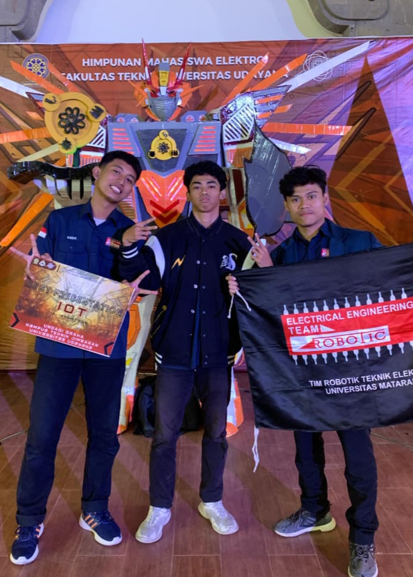
FIG 6.1 — Momen penerimaan Best Presentation
Best Presentation among 30+ teams at a national-level engineering competition, recognized for clear technical communication of an IoT-based engineering solution.
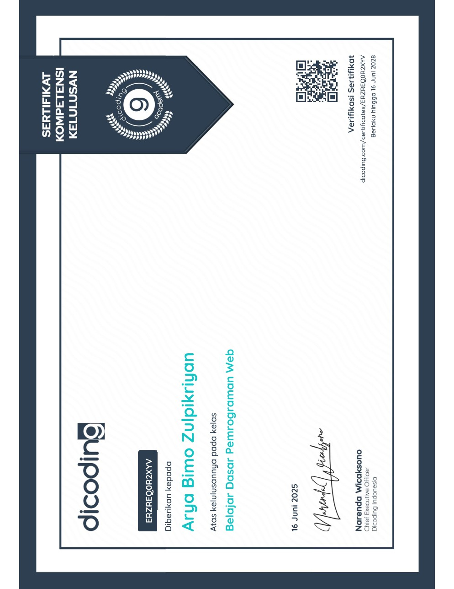
FIG 6.2 — Sertifikat Dicoding Indonesia
Foundational web programming certification.